Relativity¶
Introduction: Why Tensors¶
This section gives a brief introduction, and in the next sections we derive everything in detail. The Newton law is:
and using a potential for , we get:
the last two equations are two different equivalent ways to write a tensor equation in 3D, which means that this equation has the exact same form (is valid) in any (spatial) coordinate system (rotated, translated, in cartesian coordinates, spherical coordinates, ...). Each coordinate system has a different metric, but we can always locally transform into .
However, if our coordinate transformation depends on time (e.g. a rotating disk), then the above tensor equation changes (e.g. for the rotating disk, we get the Coriolis acceleration term), that’s because time is treated as a parameter, not as a coordinate.
To fix this, we need to work in 4D and treat time as a coordinate, so we
introduce where  is any constant speed (it can be any speed,
doesn’t have to be the speed of light). Then in 4D, the above equations are not
tensor equations anymore, because the operator
is not a tensor. The 4D tensor formulation happens to be the geodesic equation:
is any constant speed (it can be any speed,
doesn’t have to be the speed of light). Then in 4D, the above equations are not
tensor equations anymore, because the operator
is not a tensor. The 4D tensor formulation happens to be the geodesic equation:
Which (given that we know how to calculate the Ricci tensor in our coordinates) is valid in any coordinates, not only rotated, translated, cartesian, spherical, ..., but also with arbitrary time dependence, e.g. a rotating disk, accelerating disk, ...
After suitable local coordinate transformation, we can only get two possible
metrics (that connect the time and spatial coordinates):  and
and  . Inertial systems have no fictitious forces, so the
metrics is one of the two above (possibly with 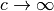). Transformation
between inertial systems is such a coordinate transformation that leaves the
metric intact, e.g.:
. Inertial systems have no fictitious forces, so the
metrics is one of the two above (possibly with 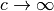). Transformation
between inertial systems is such a coordinate transformation that leaves the
metric intact, e.g.:
There is no coordinate transformation that turns the metric into , so we need to choose either one to describe one
inertial system and then all other inertial systems will automatically have a
metric with the same signature.
The Newton law is valid for small speeds compared to the speed of light, so
when we want to extend the theory for all speeds, we only have 4 options: O(3,
1) with either or finite and O(4) with either or
finite. If is finite, it has to be large enough, so that we still
recover the Newton law for small speeds with the given experimental precision.
All 4 cases give the correct Newton law, but give different predictions for
large speeds. All we need to do to decide which one is correct is to perform
such large speeds (relativistic) experiments. It turns out that all such
relativistic experiments are in agreement with the O(3, 1) case where is
the (finite) speed of light and with disagreement with the 3 other cases. For
small speeds however (i.e. Newtonean physics), all 4 cases will work, as long
as is chosen large enough.
Given a tensor equation, we can easily determine, if it transforms correctly
under the Galilean () or Lorentz transformations ( is finite).
All we have to do is to perform the limit . For example the Newton
second law is recovered if we do the limit, but Maxwell equations
are only recovered if we choose to be exactly the speed of light in the
Maxwell equations.
The reason why we write equations as tensor equations in 4D is that we can then use any coordinates (including any time dependence), i.e. any observer, and the equations still have the exact same form. So specifying the metrics is enough to define the coordinates (observer) and since the equations has only one form, that is all we need. If we write equations only as tensors in 3D, we not only need to specify the (3D) metrics, but also how the observer accelerates with respect to some (usually inertial) frame where the equations (let’s say Newton law) is defined and we then need to transform all the time derivatives correctly. By using tensors in 4D, all those transformations are taken care of by the standard tensor machinery and all we need to care about is exactly one observer, defined by its metric tensor.
By choosing the correct metrics and (i.e. and the
speed of light), all equations are then automatically Lorentz invariant. If we
choose (and any metric), we automatically get all equations
Galilean invariant.
High School Formulation¶
The usual (high school) formulation is the second Newton’s law:
for some particle of the mass  and position
and position  . To determine the
force
. To determine the
force  , we have at hand the Newton’s law of
gravitation:
, we have at hand the Newton’s law of
gravitation:
that expresses the magnitude of the force between two particles with
masses and  and we also know that the direction of the force is
directly towards the other particle.
We need to take into account all particles in the system, determine the
direction and magnitude of the force due to each of them and sum it up.
and we also know that the direction of the force is
directly towards the other particle.
We need to take into account all particles in the system, determine the
direction and magnitude of the force due to each of them and sum it up.
College Formulation¶
Unfortunately, it is quite messy to keep track of the direction of the forces and all the masses involved, it quickly becomes cumbersome for more than 2 particles. For this reason, the better approach is to calculate the force (field) from the mass density function 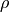:

To see that both formulations are equivalent, integrate both sides inside some sphere:
apply the Gauss theorem to the left hand side:
where and the right hand side is equal to and we get:

now we multiply both sides with , use the fact that
 (because is spherically
symmetric), and we get the traditional Newton’s
law of gravitation:
(because is spherically
symmetric), and we get the traditional Newton’s
law of gravitation:
It is useful to deal with a scalar field instead of a vector field (and also
not to have the mass of the test particle in our equations explicitly), so we
define a gravitational potential by:
then the law of gravitation is
(1)
and the second law is:
Note about units:
Example¶
Calculate the force acting on a test particle inside an infinitely thin
spherical shell of radius  and surface mass distribution . We need to solve
and surface mass distribution . We need to solve
(2)
with
the Green function of (2) is
so the solution is:
![\phi = \int G({\bf x}, {\bf y}) 4\pi G \rho({\bf y}) \d^3 y
= 4\pi G \int {\rho({\bf y})\over |{\bf x} - {\bf y}|} \d^3 y
=
= 4\pi G \int {\sigma(\theta, \phi){\delta(R-r)\over r^2} r^2\sin\theta
\over \sqrt{
(x-r\sin\theta\cos\phi)^2 +
(y-r\sin\theta\sin\phi)^2 +
(z-r\cos\theta)^2
}} \d \theta \d \phi \d r =
= 4\pi G \int {\delta(R-r)\sin\theta
\over \sqrt{
(x-r\sin\theta\cos\phi)^2 +
(y-r\sin\theta\sin\phi)^2 +
(z-r\cos\theta)^2
}} \d \theta \d \phi \d r =
= 4\pi G \int {\sin\theta
\over \sqrt{
(x-R\sin\theta\cos\phi)^2 +
(y-R\sin\theta\sin\phi)^2 +
(z-R\cos\theta)^2
}} \d \theta \d \phi =
= 4\pi G \int {\sin\theta
\over \sqrt{x^2 + y^2 + z^2 + R^2
-2R(x\sin\theta\cos\phi + y\sin\theta\sin\phi + z\cos\theta)
}} \d \theta \d \phi](../../_images/math/2d5529fd7d3239ed966aa691e1f60eef3d59e663.png)
for symmetry reasons we can set  ,
,  (it can also be done more exactly,
as shown in Example II):
(it can also be done more exactly,
as shown in Example II):
![\phi(0, 0, z)
= 4\pi G \int_0^{2\pi} \d\phi \int_0^\pi \d\theta {\sin\theta
\over \sqrt{z^2 + R^2 -2Rz\cos\theta }} =
= 8\pi^2 G \int_0^\pi \d\theta {\sin\theta
\over \sqrt{z^2 + R^2 -2Rz\cos\theta }} =
= 8\pi^2 G \int_{-1}^1 {\d y \over \sqrt{z^2 + R^2 -2Rzy }} =
= -{4\pi^2 G\over R z} \int_{(R-z)^2}^{(R+z)^2} {\d u \over \sqrt{u}} =
= -{4\pi^2 G\over R z} \Big[2\sqrt u\Big]_{(R-z)^2}^{(R+z)^2} =
= -{4\pi^2 G\over R z} \Big[2|R+z| - 2|R-z|\Big] =
= -{4\pi^2 G\over R z} \Big[4z\Big] =
= -{16\pi^2 G\over R}](../../_images/math/aa9e25d251ac9a2222dc5f8c7faa8e6e0c87649f.png)
This must hold for all  and
and  (less than ), so:
(less than ), so:
And the force is
So the force acting on a test particle inside the shell is zero.
Differential Geometry Formulation¶
There are still problems with this formulation, because it is not immediatelly clear how to write those laws in other frames, for example rotating, or accelerating – one needs to employ nontrivial assumptions about the systems, space, relativity principle and it is often a source confusion. Fortunately there is a way out — differential geometry. By reformulating the above laws in the language of the differential geometry, everything will suddenly be very explicit and clear. As an added bonus, because the special and general relativity uses the same language, the real differences between all these three theories will become clear.
We write and  as components of one 4-vector
as components of one 4-vector
In this section, you can imagine  , but we’ll need it later, so we put it
in right now, so that we don’t need to rederive all equations again.
Now we need to connect the Newtonian equations to geometry. To do that, we
reformulate the Newton’s second law:
, but we’ll need it later, so we put it
in right now, so that we don’t need to rederive all equations again.
Now we need to connect the Newtonian equations to geometry. To do that, we
reformulate the Newton’s second law:
by choosing a parameter  such, that ,
so in general
such, that ,
so in general
and
so
and using the relation we get
So using instead of , we endup with the following equations:
But this is exactly the geodesic equation for the following Christoffel symbols:
(3)
and all other components are zero.
In order to formulate the gravitation law, we now need to express in terms of geometric quantities like or . We get the only nonzero components of the Riemann tensor:

we calculate the by contracting:
comparing with (1) we see that the Newton gravitation law is
Thus we have reformulated the Newton’s laws in a frame invariant way — the matter curves the geometry using the equations:
from which one can (for example) calculate the Christoffel symbols and other things. The particles then move on the geodesics:
Both equations now have the same form in all coordinate systems (inertial or not) and it is clear how to transform them — only the Christoffel symbols (and Ricci tensor) change and we have a formula for their transformation.
Obviously this works for any value of (as it cancels out in the final
equations of motion) and at this level we don’t really need it yet, so we can
set and forget about it. In the next section we will need some constant
in the metric to send to infinity in order to obtain the correct Christoffel
symbols, and we can conveniently just use . Later on we introduce special
relativity and we need to introduce a speed of light and it turns out that we
can again just use for that without any loss of generality.
Metrics¶
There is a slight problem with the metrics — it can be proven that there is
no metrics, that generates the Christoffel symbols above. However, it turns out
that if we introduce an invariant speed in the metrics, then calculate the
Christoffel symbols (thus they depend on ) and then do the limit
, we can get the Christoffel symbols above.
In fact, it turns out that there are many such metrics that generate the right Christoffel symbols. Below we list several similar metrics and the corresponding Christoffel symbols (in the limit ), so that we can get a better feeling what metrics work and what don’t and why:

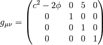
If we do the limit in the metrics itself, all the working metrics degenerate to:
(possibly with nonzero but finite elements ). So it seems like any metrics whose limit is , generates the correct Christoffel symbols:
but this would have to be investigated further.
Let’s take the metrics and calculate the Christoffel symbols (without the limit ):
![\Gamma^0_{\mu\nu}=\begin{pmatrix}- \frac{\frac{\partial}{\partial t} \phi\left(t,x,y,z\right)}{- 2 \phi\left(t,x,y,z\right) - {c}^{2}} & - \frac{\frac{\partial}{\partial x} \phi\left(t,x,y,z\right)}{- 2 \phi\left(t,x,y,z\right) - {c}^{2}} & - \frac{\frac{\partial}{\partial y} \phi\left(t,x,y,z\right)}{- 2 \phi\left(t,x,y,z\right) - {c}^{2}} & - \frac{\frac{\partial}{\partial z} \phi\left(t,x,y,z\right)}{- 2 \phi\left(t,x,y,z\right) - {c}^{2}}\\- \frac{\frac{\partial}{\partial x} \phi\left(t,x,y,z\right)}{- 2 \phi\left(t,x,y,z\right) - {c}^{2}} & \frac{\frac{\partial}{\partial t} \phi\left(t,x,y,z\right)}{{c}^{2} \left(- 2 \phi\left(t,x,y,z\right) - {c}^{2}\right)} & 0 & 0\\- \frac{\frac{\partial}{\partial y} \phi\left(t,x,y,z\right)}{- 2 \phi\left(t,x,y,z\right) - {c}^{2}} & 0 & \frac{\frac{\partial}{\partial t} \phi\left(t,x,y,z\right)}{{c}^{2} \left(- 2 \phi\left(t,x,y,z\right) - {c}^{2}\right)} & 0\\- \frac{\frac{\partial}{\partial z} \phi\left(t,x,y,z\right)}{- 2 \phi\left(t,x,y,z\right) - {c}^{2}} & 0 & 0 & \frac{\frac{\partial}{\partial t} \phi\left(t,x,y,z\right)}{{c}^{2} \left(- 2 \phi\left(t,x,y,z\right) - {c}^{2}\right)}\end{pmatrix}
\Gamma^1_{\mu\nu}=\begin{pmatrix}\frac{\frac{\partial}{\partial x} \phi\left(t,x,y,z\right)}{1 - 2 \frac{\phi\left(t,x,y,z\right)}{{c}^{2}}} & - \frac{\frac{\partial}{\partial t} \phi\left(t,x,y,z\right)}{{c}^{2} \left(1 - 2 \frac{\phi\left(t,x,y,z\right)}{{c}^{2}}\right)} & 0 & 0\\- \frac{\frac{\partial}{\partial t} \phi\left(t,x,y,z\right)}{{c}^{2} \left(1 - 2 \frac{\phi\left(t,x,y,z\right)}{{c}^{2}}\right)} & - \frac{\frac{\partial}{\partial x} \phi\left(t,x,y,z\right)}{{c}^{2} \left(1 - 2 \frac{\phi\left(t,x,y,z\right)}{{c}^{2}}\right)} & - \frac{\frac{\partial}{\partial y} \phi\left(t,x,y,z\right)}{{c}^{2} \left(1 - 2 \frac{\phi\left(t,x,y,z\right)}{{c}^{2}}\right)} & - \frac{\frac{\partial}{\partial z} \phi\left(t,x,y,z\right)}{{c}^{2} \left(1 - 2 \frac{\phi\left(t,x,y,z\right)}{{c}^{2}}\right)}\\0 & - \frac{\frac{\partial}{\partial y} \phi\left(t,x,y,z\right)}{{c}^{2} \left(1 - 2 \frac{\phi\left(t,x,y,z\right)}{{c}^{2}}\right)} & \frac{\frac{\partial}{\partial x} \phi\left(t,x,y,z\right)}{{c}^{2} \left(1 - 2 \frac{\phi\left(t,x,y,z\right)}{{c}^{2}}\right)} & 0\\0 & - \frac{\frac{\partial}{\partial z} \phi\left(t,x,y,z\right)}{{c}^{2} \left(1 - 2 \frac{\phi\left(t,x,y,z\right)}{{c}^{2}}\right)} & 0 & \frac{\frac{\partial}{\partial x} \phi\left(t,x,y,z\right)}{{c}^{2} \left(1 - 2 \frac{\phi\left(t,x,y,z\right)}{{c}^{2}}\right)}\end{pmatrix}
\Gamma^2_{\mu\nu}=\begin{pmatrix}\frac{\frac{\partial}{\partial y} \phi\left(t,x,y,z\right)}{1 - 2 \frac{\phi\left(t,x,y,z\right)}{{c}^{2}}} & 0 & - \frac{\frac{\partial}{\partial t} \phi\left(t,x,y,z\right)}{{c}^{2} \left(1 - 2 \frac{\phi\left(t,x,y,z\right)}{{c}^{2}}\right)} & 0\\0 & \frac{\frac{\partial}{\partial y} \phi\left(t,x,y,z\right)}{{c}^{2} \left(1 - 2 \frac{\phi\left(t,x,y,z\right)}{{c}^{2}}\right)} & - \frac{\frac{\partial}{\partial x} \phi\left(t,x,y,z\right)}{{c}^{2} \left(1 - 2 \frac{\phi\left(t,x,y,z\right)}{{c}^{2}}\right)} & 0\\- \frac{\frac{\partial}{\partial t} \phi\left(t,x,y,z\right)}{{c}^{2} \left(1 - 2 \frac{\phi\left(t,x,y,z\right)}{{c}^{2}}\right)} & - \frac{\frac{\partial}{\partial x} \phi\left(t,x,y,z\right)}{{c}^{2} \left(1 - 2 \frac{\phi\left(t,x,y,z\right)}{{c}^{2}}\right)} & - \frac{\frac{\partial}{\partial y} \phi\left(t,x,y,z\right)}{{c}^{2} \left(1 - 2 \frac{\phi\left(t,x,y,z\right)}{{c}^{2}}\right)} & - \frac{\frac{\partial}{\partial z} \phi\left(t,x,y,z\right)}{{c}^{2} \left(1 - 2 \frac{\phi\left(t,x,y,z\right)}{{c}^{2}}\right)}\\0 & 0 & - \frac{\frac{\partial}{\partial z} \phi\left(t,x,y,z\right)}{{c}^{2} \left(1 - 2 \frac{\phi\left(t,x,y,z\right)}{{c}^{2}}\right)} & \frac{\frac{\partial}{\partial y} \phi\left(t,x,y,z\right)}{{c}^{2} \left(1 - 2 \frac{\phi\left(t,x,y,z\right)}{{c}^{2}}\right)}\end{pmatrix}
\Gamma^3_{\mu\nu}=\begin{pmatrix}\frac{\frac{\partial}{\partial z} \phi\left(t,x,y,z\right)}{1 - 2 \frac{\phi\left(t,x,y,z\right)}{{c}^{2}}} & 0 & 0 & - \frac{\frac{\partial}{\partial t} \phi\left(t,x,y,z\right)}{{c}^{2} \left(1 - 2 \frac{\phi\left(t,x,y,z\right)}{{c}^{2}}\right)}\\0 & \frac{\frac{\partial}{\partial z} \phi\left(t,x,y,z\right)}{{c}^{2} \left(1 - 2 \frac{\phi\left(t,x,y,z\right)}{{c}^{2}}\right)} & 0 & - \frac{\frac{\partial}{\partial x} \phi\left(t,x,y,z\right)}{{c}^{2} \left(1 - 2 \frac{\phi\left(t,x,y,z\right)}{{c}^{2}}\right)}\\0 & 0 & \frac{\frac{\partial}{\partial z} \phi\left(t,x,y,z\right)}{{c}^{2} \left(1 - 2 \frac{\phi\left(t,x,y,z\right)}{{c}^{2}}\right)} & - \frac{\frac{\partial}{\partial y} \phi\left(t,x,y,z\right)}{{c}^{2} \left(1 - 2 \frac{\phi\left(t,x,y,z\right)}{{c}^{2}}\right)}\\- \frac{\frac{\partial}{\partial t} \phi\left(t,x,y,z\right)}{{c}^{2} \left(1 - 2 \frac{\phi\left(t,x,y,z\right)}{{c}^{2}}\right)} & - \frac{\frac{\partial}{\partial x} \phi\left(t,x,y,z\right)}{{c}^{2} \left(1 - 2 \frac{\phi\left(t,x,y,z\right)}{{c}^{2}}\right)} & - \frac{\frac{\partial}{\partial y} \phi\left(t,x,y,z\right)}{{c}^{2} \left(1 - 2 \frac{\phi\left(t,x,y,z\right)}{{c}^{2}}\right)} & - \frac{\frac{\partial}{\partial z} \phi\left(t,x,y,z\right)}{{c}^{2} \left(1 - 2 \frac{\phi\left(t,x,y,z\right)}{{c}^{2}}\right)}\end{pmatrix}](../../_images/math/cdf3390b3880ab08bb04ec3b8fe6c88c11609a75.png)
By taking the limit , the only nonzero Christoffel symbols are:
or written compactly:

So the geodesics equation
becomes


From the first equation we get , we substitute to the second equation:
or
So the Newton’s second law is the equation of geodesics.
In the above, we
have set in the Christoffel symbols themselves (see the last paragraph
from the last section) and introduced another constant in the metric
itself. As we can see, the metric will become infinite with this approach in
the limit . Another approach is to store this in the  vector itself, then the metric stays finite (in fact becomes a diagonal matrix
, thus it gives all the Christoffel symbols equal to
zero, in the limit), but the vector becomes infinite in the limit.
vector itself, then the metric stays finite (in fact becomes a diagonal matrix
, thus it gives all the Christoffel symbols equal to
zero, in the limit), but the vector becomes infinite in the limit.
Either way our formalism breaks down, and thus we need to keep finite and
only do the limit in the final equations (after we don’t need differential
geometry anymore). When needed, we can also carefully neglect higher terms in
, that will not appear in the final equations after doing the limit, but one
needs to make sure that no mistake is made.
It is customary to put the constant
into the vector and so we will do so too from this point on.
Conclusion About Metric¶
We will use the convention to keep in the 4-vector and the simplest metric
that generates the correct Christoffel symbols is the following:
In the limit we get the following nonzero Christoffel symbols (for both signs in 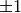 above):
all other symbols contain higher powers of and thus will not contribute in
the limit . The remaining  in will cancel with
the in
in will cancel with
the in  in the final equations.
in the final equations.
As seen above, there is some freedom in which metric we can use in order to obtain the correct Christoffel symbols, but the above metric is the simplest, so we’ll use it from now on.
Einstein’s Equations¶
Einstein’s equations are derived from the Hilbert action:
The Lagrangian density has to be given, that’s our assumption and everything else is derived from it. In principle it can have other terms, for example and there are a lot of possibilities and ultimately the exact form of the Lagrangian has to be decided by experiment. The Hilbert action is the simplest possible action and it already gives a theory which agrees with experiment, so that will be our starting point.
Varying it with respect to the metric we get:
![\delta S_H = \delta {c^4\over 16\pi G} \int R \sqrt{ |\det g| } \d^4 x =
= {c^4\over 16\pi G} \int
(\delta g^{\mu\nu}) R_{\mu\nu} \sqrt{ |\det g| }
+g^{\mu\nu} (\delta R_{\mu\nu}) \sqrt{ |\det g| }
+R (\delta \sqrt{ |\det g| })
\d^4 x=
= {c^4\over 16\pi G} \int
(\delta g^{\mu\nu}) R_{\mu\nu} \sqrt{ |\det g| }
+g^{\mu\nu} \left(
\nabla_\lambda(\delta \Gamma^\lambda_{\nu\mu})
-\nabla_\nu(\delta \Gamma^\lambda_{\lambda\mu})
\right)\sqrt{ |\det g| }
+R (
-\half \sqrt{ |\det g| }\, g_{\mu\nu} (\delta g^{\mu\nu}))
\d^4 x=
= {c^4\over 16\pi G} \int
(\delta g^{\mu\nu}) R_{\mu\nu} \sqrt{ |\det g| }
+ \left(
\nabla_\lambda g^{\mu\nu}(\delta \Gamma^\lambda_{\nu\mu})
-\nabla_\nu g^{\mu\nu}(\delta \Gamma^\lambda_{\lambda\mu})
\right)\sqrt{ |\det g| }
-\half R g_{\mu\nu} \sqrt{ |\det g| }\,
(\delta g^{\mu\nu})
\d^4 x=
= {c^4\over 16\pi G} \int
(\delta g^{\mu\nu}) R_{\mu\nu} \sqrt{ |\det g| }
-\half R g_{\mu\nu} \sqrt{ |\det g| }\,
(\delta g^{\mu\nu})
\d^4 x=
= {c^4\over 16\pi G} \int \left( R_{\mu\nu} -\half R g_{\mu\nu} \right)
(\delta g^{\mu\nu}) \sqrt{ |\det g| }
\d^4 x](../../_images/math/919133525331c376824330939b4cd9661f9503f2.png)
Where we used the following identities:
and the fact that the four divergence doesn’t contribute to the integral. By setting , we get:
Combining the Hilbert action  with the action for matter
with the action for matter  we get:
we get:

Varying this action as above we get:
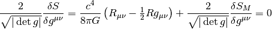
so:
Where we set:
This is a definition of the stress energy tensor corresponding to the action . We can also write it in terms of the Lagrangian directly as:
![T_{\mu\nu} = - {2\over\sqrt{ |\det g| }}{\delta S_M\over\delta g^{\mu\nu}}=
= - {2\over\sqrt{ |\det g| }}{\delta \int \L_M \sqrt{ |\det g| }\d^4 x
\over\delta g^{\mu\nu}} =
= - {2\over\sqrt{ |\det g| }}{\int (\delta \L_M) \sqrt{ |\det g| }
+ \L_M \left(\delta \sqrt{ |\det g| }\right)\d^4 x
\over\delta g^{\mu\nu}} =
= - {2\over\sqrt{ |\det g| }}{\int \left({\delta \L_M
\over\delta g^{\mu\nu}}(\delta g^{\mu\nu})\right) \sqrt{ |\det g| }
+ \L_M \left(-\half
\sqrt{ |\det g| }\, g_{\mu\nu} (\delta g^{\mu\nu})\right)\d^4 x
\over\delta g^{\mu\nu}} =
= - {2\over\sqrt{ |\det g| }}\left({\delta \L_M
\over\delta g^{\mu\nu}} \sqrt{ |\det g| }
- \half \L_M \sqrt{ |\det g| }\, g_{\mu\nu} \right) =
= - 2 {\delta \L_M \over\delta g^{\mu\nu}}
+ g_{\mu\nu} \L_M](../../_images/math/37386cd0696a3f4f5c02be2b5062111aea795d50.png)
If this action contains electromagnetic field, we get an electromagnetic stress energy tensor. For continous matter, we get the stress energy tensor for continous matter, see the next section. The right hand side of the Einstein’s equations contains the sum of all stress energy tensors (for all fields in the Lagrangian).
Continuous Distribution of Matter¶
The action is:
But it isn’t suitable for applying variations because and are not independent quantities. So we write it in terms of a 4-momentum vector density :
and the action becomes:
We vary with respect to :
![\delta S_M
= - \delta \int c \sqrt{\textgoth{p}_\mu \textgoth{p}^\mu} \d^4 x =
= - \int c {\delta(g^{\mu\nu} \textgoth{p}_\mu \textgoth{p}_\nu)
\over 2\sqrt{\textgoth{p}_\alpha \textgoth{p}^\alpha}} \d^4 x =
= - \int c { \textgoth{p}_\mu \textgoth{p}_\nu
\over 2\sqrt{\textgoth{p}_\alpha \textgoth{p}^\alpha}}
\delta(g^{\mu\nu})\d^4 x =
= - \int c { \rho v_\mu \rho v_\nu
\sqrt{ |\det g| }^2
\over 2 \rho c \sqrt{ |\det g| } }
\delta(g^{\mu\nu})\d^4 x =
= - \int \half \rho v_\mu v_\nu
\delta(g^{\mu\nu}) \sqrt{ |\det g| } \d^4 x](../../_images/math/2c016169e24dd5dbd4b712fa8e3ca9ffb22ef308.png)
And the stress energy tensor is:
Now we vary with respect to :
![\delta S_M
= - \delta \int c \sqrt{\textgoth{p}_\mu \textgoth{p}^\mu} \d^4 x =
= - \int c {\delta(g^{\mu\nu} \textgoth{p}_\mu \textgoth{p}_\nu)
\over 2\sqrt{\textgoth{p}_\alpha \textgoth{p}^\alpha}} \d^4 x =
= - \int c { 2 g^{\mu\nu} \textgoth{p}_\mu (\delta \textgoth{p}_\nu)
\over 2\sqrt{\textgoth{p}_\alpha \textgoth{p}^\alpha}} \d^4 x =
= - \int c { \textgoth{p}_\mu \over \sqrt{\textgoth{p}_\alpha \textgoth{p}^\alpha}}
(\delta \textgoth{p}^\mu) \d^4 x =
= - \int c { \textgoth{p}_\mu \over \sqrt{\textgoth{p}_\alpha \textgoth{p}^\alpha}}
\partial_\nu \left(\textgoth{p}^\nu(\delta x^\mu) - \textgoth{p}^\mu (\delta x^\nu)\right)
\d^4 x =
= \int c \partial_\nu \left({ \textgoth{p}_\mu \over
\sqrt{\textgoth{p}_\alpha \textgoth{p}^\alpha}}
\right)
\left(\textgoth{p}^\nu(\delta x^\mu) - \textgoth{p}^\mu (\delta x^\nu)\right)
\d^4 x =
= \int c \left(
\partial_\nu \left({ \textgoth{p}_\mu \over \sqrt{\textgoth{p}_\alpha \textgoth{p}^\alpha}} \right)
-\partial_\mu \left({ \textgoth{p}_\nu \over \sqrt{\textgoth{p}_\alpha \textgoth{p}^\alpha}} \right)
\right)
\textgoth{p}^\nu(\delta x^\mu)
\d^4 x =
= \int c \left(
\nabla_\nu \left({ \textgoth{p}_\mu \over \sqrt{\textgoth{p}_\alpha \textgoth{p}^\alpha}} \right)
-\nabla_\mu \left({ \textgoth{p}_\nu \over \sqrt{\textgoth{p}_\alpha \textgoth{p}^\alpha}} \right)
\right)
\textgoth{p}^\nu(\delta x^\mu)
\d^4 x =
= \int \left( \nabla_\nu v_\mu -\nabla_\mu v_\nu \right)
\rho v^\nu (\delta x^\mu) \sqrt{ |\det g| }
\d^4 x =
= \int \rho (\nabla_\nu v_\mu) v^\nu (\delta x^\mu) \sqrt{ |\det g| }
\d^4 x](../../_images/math/7a9693f025f65e1f73c7a917b8e0088a80a0c709.png)
So the equation of motion is the geodesic:
Charged matter has the interaction action:
where we have introduced the 4-current and 4-current density :
We vary  with respect to :
with respect to :
![\delta S_q
= - \delta \int \textgoth{j}^\mu A_\mu \d^4 x =
= - \int (\delta \textgoth{j}^\mu) A_\mu \d^4 x =
= - \int \partial_\nu \left(\textgoth{j}^\nu (\delta x^\mu)
- \textgoth{j}^\mu (\delta x^\nu)\right) A_\mu \d^4 x =
= \int \left(\textgoth{j}^\nu (\delta x^\mu)
- \textgoth{j}^\mu (\delta x^\nu)\right) \partial_\nu A_\mu \d^4 x =
= \int \textgoth{j}^\nu (\delta x^\mu) (\partial_\nu A_\mu -\partial_\mu A_\nu)
\d^4 x =
= \int \rho_{EM} v^\nu (\partial_\nu A_\mu -\partial_\mu A_\nu)
(\delta x^\mu) \sqrt{ |\det g| }
\d^4 x =
= -\int \rho_{EM} v^\nu F_{\mu\nu} (\delta x^\mu) \sqrt{ |\det g| }
\d^4 x](../../_images/math/ce760eb19888b1c0ebff33eb50ce2f51b2aac789.png)
So the combined action 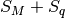 yields:

Varying with respect to 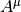 yields the 4-current which ends up on the right hand side of the Maxwell’s equations when
varying the  action.
action.
Obsolete Section¶
This section is obsolete, ideas from it should be polished (sometimes corrected) and put to other sections.
The problem is, that in general, Christoffel symbols have 40 components and metrics only 10 and in our case, we cannot find such a metrics, that generates the Christoffel symbols above. In other words, the spacetime that describes the Newtonian theory is affine, but not a metric space. The metrics is singular, and we have one metrics that describes the time coordinate and another metrics that describes the spatial coordinates. We know the affine connection coefficients , so that is enough to calculate geodesics and to differentiate vectors and do everything we need.
However, for me it is still not satisfactory, because I really want to have a
metrics tensor, so that I can easily derive things in exactly the same way as
in general relativity. To do that, we will have to work in the regime is
finite and only at the end do the limit .
We start with Einstein’s equations:
or
The energy-momentum tensor is
in our approximation and , so the only nonzero component is:
and
We need to find such a metric tensor, that
then we get (1).
There are several ways to choose the metrics tensor. We
start
We can always find a coordinate transformation, that converts the metrics to a
diagonal form with only  ,
,  and on the diagonal. If we want
nondegenerate metrics, we do not accept (but as it turns out, the metrics
for the Newtonian mechanics is degenerated).
Also, it is equivalent if we add a minus to all diagonal elements, e.g. and are equivalent, so
we are left
with these options only:
signature 4:
and on the diagonal. If we want
nondegenerate metrics, we do not accept (but as it turns out, the metrics
for the Newtonian mechanics is degenerated).
Also, it is equivalent if we add a minus to all diagonal elements, e.g. and are equivalent, so
we are left
with these options only:
signature 4:

signature 2:
signature 0:
No other possibility exists (up to adding a minus to all elements). We can also
quite easily find coordinate transformations that swap coordinates, i.e. we can
always find a transformation so that we first have only and then only
on the diagonal, so we are left with:
signature 4:
signature 2:
signature 0:
One possible physical interpretation of the signature 0 metrics is that we have 2 time coordinates and 2 spatial coordinates. In any case, this metrics doesn’t describe our space (neither Newtonian nor general relativity), because we really need the spatial coordinates to have the metrics either or .
So we are left with either (this case will probably not work, but I want to have an explicit reason why it doesn’t work):
or (this is the usual special relativity)
It turns out, that one option to turn on gravitation is to add the term to the metric tensor, in the first case:
and second case:
The second law is derived from the equation of geodesic:
in an equivalent form
The only nonzero Christoffel symbols in the first case are (in the expressions
for the Christoffel symbols below, we set ):
![\Gamma^0_{\mu\nu}= \begin{pmatrix}- \frac{\frac{\partial}{\partial t} \phi\left(t,x,y,z\right)}{1 - 2 \phi\left(t,x,y,z\right)} & - \frac{\frac{\partial}{\partial x} \phi\left(t,x,y,z\right)}{1 - 2 \phi\left(t,x,y,z\right)} & - \frac{\frac{\partial}{\partial y} \phi\left(t,x,y,z\right)}{1 - 2 \phi\left(t,x,y,z\right)} & - \frac{\frac{\partial}{\partial z} \phi\left(t,x,y,z\right)}{1 - 2 \phi\left(t,x,y,z\right)}\\- \frac{\frac{\partial}{\partial x} \phi\left(t,x,y,z\right)}{1 - 2 \phi\left(t,x,y,z\right)} & \frac{\frac{\partial}{\partial t} \phi\left(t,x,y,z\right)}{1 - 2 \phi\left(t,x,y,z\right)} & 0 & 0\\- \frac{\frac{\partial}{\partial y} \phi\left(t,x,y,z\right)}{1 - 2 \phi\left(t,x,y,z\right)} & 0 & \frac{\frac{\partial}{\partial t} \phi\left(t,x,y,z\right)}{1 - 2 \phi\left(t,x,y,z\right)} & 0\\- \frac{\frac{\partial}{\partial z} \phi\left(t,x,y,z\right)}{1 - 2 \phi\left(t,x,y,z\right)} & 0 & 0 & \frac{\frac{\partial}{\partial t} \phi\left(t,x,y,z\right)}{1 - 2 \phi\left(t,x,y,z\right)}\end{pmatrix}
\Gamma^1_{\mu\nu}= \begin{pmatrix}\frac{\frac{\partial}{\partial x} \phi\left(t,x,y,z\right)}{1 - 2 \phi\left(t,x,y,z\right)} & - \frac{\frac{\partial}{\partial t} \phi\left(t,x,y,z\right)}{1 - 2 \phi\left(t,x,y,z\right)} & 0 & 0\\- \frac{\frac{\partial}{\partial t} \phi\left(t,x,y,z\right)}{1 - 2 \phi\left(t,x,y,z\right)} & - \frac{\frac{\partial}{\partial x} \phi\left(t,x,y,z\right)}{1 - 2 \phi\left(t,x,y,z\right)} & - \frac{\frac{\partial}{\partial y} \phi\left(t,x,y,z\right)}{1 - 2 \phi\left(t,x,y,z\right)} & - \frac{\frac{\partial}{\partial z} \phi\left(t,x,y,z\right)}{1 - 2 \phi\left(t,x,y,z\right)}\\0 & - \frac{\frac{\partial}{\partial y} \phi\left(t,x,y,z\right)}{1 - 2 \phi\left(t,x,y,z\right)} & \frac{\frac{\partial}{\partial x} \phi\left(t,x,y,z\right)}{1 - 2 \phi\left(t,x,y,z\right)} & 0\\0 & - \frac{\frac{\partial}{\partial z} \phi\left(t,x,y,z\right)}{1 - 2 \phi\left(t,x,y,z\right)} & 0 & \frac{\frac{\partial}{\partial x} \phi\left(t,x,y,z\right)}{1 - 2 \phi\left(t,x,y,z\right)}\end{pmatrix}
\Gamma^2_{\mu\nu}= \begin{pmatrix}\frac{\frac{\partial}{\partial y} \phi\left(t,x,y,z\right)}{1 - 2 \phi\left(t,x,y,z\right)} & 0 & - \frac{\frac{\partial}{\partial t} \phi\left(t,x,y,z\right)}{1 - 2 \phi\left(t,x,y,z\right)} & 0\\0 & \frac{\frac{\partial}{\partial y} \phi\left(t,x,y,z\right)}{1 - 2 \phi\left(t,x,y,z\right)} & - \frac{\frac{\partial}{\partial x} \phi\left(t,x,y,z\right)}{1 - 2 \phi\left(t,x,y,z\right)} & 0\\- \frac{\frac{\partial}{\partial t} \phi\left(t,x,y,z\right)}{1 - 2 \phi\left(t,x,y,z\right)} & - \frac{\frac{\partial}{\partial x} \phi\left(t,x,y,z\right)}{1 - 2 \phi\left(t,x,y,z\right)} & - \frac{\frac{\partial}{\partial y} \phi\left(t,x,y,z\right)}{1 - 2 \phi\left(t,x,y,z\right)} & - \frac{\frac{\partial}{\partial z} \phi\left(t,x,y,z\right)}{1 - 2 \phi\left(t,x,y,z\right)}\\0 & 0 & - \frac{\frac{\partial}{\partial z} \phi\left(t,x,y,z\right)}{1 - 2 \phi\left(t,x,y,z\right)} & \frac{\frac{\partial}{\partial y} \phi\left(t,x,y,z\right)}{1 - 2 \phi\left(t,x,y,z\right)}\end{pmatrix}
\Gamma^3_{\mu\nu}= \begin{pmatrix}\frac{\frac{\partial}{\partial z} \phi\left(t,x,y,z\right)}{1 - 2 \phi\left(t,x,y,z\right)} & 0 & 0 & - \frac{\frac{\partial}{\partial t} \phi\left(t,x,y,z\right)}{1 - 2 \phi\left(t,x,y,z\right)}\\0 & \frac{\frac{\partial}{\partial z} \phi\left(t,x,y,z\right)}{1 - 2 \phi\left(t,x,y,z\right)} & 0 & - \frac{\frac{\partial}{\partial x} \phi\left(t,x,y,z\right)}{1 - 2 \phi\left(t,x,y,z\right)}\\0 & 0 & \frac{\frac{\partial}{\partial z} \phi\left(t,x,y,z\right)}{1 - 2 \phi\left(t,x,y,z\right)} & - \frac{\frac{\partial}{\partial y} \phi\left(t,x,y,z\right)}{1 - 2 \phi\left(t,x,y,z\right)}\\- \frac{\frac{\partial}{\partial t} \phi\left(t,x,y,z\right)}{1 - 2 \phi\left(t,x,y,z\right)} & - \frac{\frac{\partial}{\partial x} \phi\left(t,x,y,z\right)}{1 - 2 \phi\left(t,x,y,z\right)} & - \frac{\frac{\partial}{\partial y} \phi\left(t,x,y,z\right)}{1 - 2 \phi\left(t,x,y,z\right)} & - \frac{\frac{\partial}{\partial z} \phi\left(t,x,y,z\right)}{1 - 2 \phi\left(t,x,y,z\right)}\end{pmatrix}](../../_images/math/671442107e74730dbf632307e3526098914dc3a6.png)
and in the second case, only  is different:
is different:
![\Gamma^0_{\mu\nu}= \begin{pmatrix}\frac{\frac{\partial}{\partial t} \phi\left(t,x,y,z\right)}{1 + 2 \phi\left(t,x,y,z\right)} & \frac{\frac{\partial}{\partial x} \phi\left(t,x,y,z\right)}{1 + 2 \phi\left(t,x,y,z\right)} & \frac{\frac{\partial}{\partial y} \phi\left(t,x,y,z\right)}{1 + 2 \phi\left(t,x,y,z\right)} & \frac{\frac{\partial}{\partial z} \phi\left(t,x,y,z\right)}{1 + 2 \phi\left(t,x,y,z\right)}\\\frac{\frac{\partial}{\partial x} \phi\left(t,x,y,z\right)}{1 + 2 \phi\left(t,x,y,z\right)} & - \frac{\frac{\partial}{\partial t} \phi\left(t,x,y,z\right)}{1 + 2 \phi\left(t,x,y,z\right)} & 0 & 0\\\frac{\frac{\partial}{\partial y} \phi\left(t,x,y,z\right)}{1 + 2 \phi\left(t,x,y,z\right)} & 0 & - \frac{\frac{\partial}{\partial t} \phi\left(t,x,y,z\right)}{1 + 2 \phi\left(t,x,y,z\right)} & 0\\\frac{\frac{\partial}{\partial z} \phi\left(t,x,y,z\right)}{1 + 2 \phi\left(t,x,y,z\right)} & 0 & 0 & - \frac{\frac{\partial}{\partial t} \phi\left(t,x,y,z\right)}{1 + 2 \phi\left(t,x,y,z\right)}\end{pmatrix}](../../_images/math/55312378d8fb6ce34576de57297660064d63730b.png)
Now we assume that , so all  are of the same order. Also and , so the only
nonnegligible term is
are of the same order. Also and , so the only
nonnegligible term is

Substituting for the Christoffel symbol we get
and multiplying both sides with :
which is the second Newton’s law. For the zeroth component we get (first case metric)
second case:

Where is the energy of the particle (with respect to this frame only), this means the energy is conserved unless the gravitational field depends on time.
To summarize: the Christoffel symbols (3) that we get from the
Newtonian theory contain , which up to this point can be any speed, for
example we can set . However, in order to have some metrics
tensor that generates those Christoffel symbols, the only way to do that is by
the metrics
then calculating the Christoffel symbols. If we neglect the terms of the order
and higher, we get the Newtonian
Christoffel symbols (3) that we want. It’s clear that in order
to neglect the terms, we must have , so we must choose
large enough for this to work. To put it plainly, unless is large, there is
no metrics in our Newtonian spacetime. However for large, everything is
fine.
Inertial frames¶
What is an inertial frame? Inertial frame is such a frame that doesn’t have any fictitious forces. What is a fictitious force? If we take covariant time derivative of any vector, then fictitious forces are all the terms with nonzero Christoffel symbols. In other words, nonzero Christoffel symbols mean that by (partially) differentiating with respect to time, we need to add additional terms in order to get a proper vector again – and those terms are called fictitious forces if we are differentiating the velocity vector.
Inertial frame is a frame without fictitious forces, i.e. with all Christoffel symbols zero in the whole frame. This is equivalent to all components of the Riemann tensor being zero:
In general, if in the whole universe, then no such frame exists, but one can always achieve that locally, because one can always find a coordinate transformation so that the Christoffel symbols are zero locally (e.g. at one point), but unless , the Christoffel symbols will not be zero in the whole frame. So the (local) inertial frame is such a frame that has zero Christoffel symbols (locally).
What is the metrics of the inertial frame? It is such a metrics, that . The derivatives however doesn’t have to be zero. We know that taking any of the metrics listed above with we get all the Christoffel symbols zero. So for example these two metrics (one with a plus sign, the other with a minus sign) have all the Christoffel symbols zero:
Such a metrics corresponds to an inertial frame then.
What are the (coordinate) transformations, that transform from one
inertial frame to another? Those are all transformations that start with an
inertial frame metrics (an example of such a metrics is given above), transform
it using the transformation matrix and the resulting metrics is also inertial.
In particular, let be inertial, thus is an inertial
metrics, then transform to and :
if we denote the transformation matrix by :
then the transformation law is:
Now let’s assume that  , i.e. both inertial systems are given by the same
matrix and let’s assume this particular form:
, i.e. both inertial systems are given by the same
matrix and let’s assume this particular form:
(e.g. this covers almost all possible Newtonian metrics tensors).
Lorentz Group¶
The Lorentz group is O(3,1), e.g. all matrices satisfying:
(4)
with .
Taking the determinant of (4) we get  or
. Writing the 00 component of (4) we get
or
. Writing the 00 component of (4) we get
or
Thus we can see that either (the transformation preserves the direction of time, orthochronous) or (not orthochronous). Thus we can see that the O(3, 1) group consists of 4 continuous parts, that are not connected.
First case: elements with and . Transformations
with form a subgroup and are called SO(3, 1), if they also have
(orthochronous), then they also form a subgroup and are called
the proper Lorentz transformations and denoted by . They
consists of Lorentz boosts, example in the -direction:
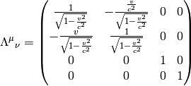
which in the limit gives
and spatial rotations:
(More rigorous derivation will be given in a moment.) It can be shown (see below), that all other elements (improper Lorentz transformations) of the O(3, 1) group can be written as products of an element from and an element of the discrete group:
where  is space inversion (also called space reflection or parity
transformation):
is space inversion (also called space reflection or parity
transformation):
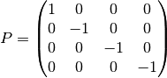
and  is time reversal (also called time inversion):
is time reversal (also called time inversion):
Second case: elements with and . An example of such an element is . In general, any product from and belongs here.
Third case: elements with and . An example of
such an element is . In general, any product from and
belongs here.
Fourth case: elements with and . An example of
such an element is . In general, any product from and
belongs here.
Example: where does the reflection around a single spatial axis belong to? It is the third case, because the determinant is and the 00 element is 1. Written in the matrix form:

So it is constructed using the  element from and P
from the discrete group above.
element from and P
from the discrete group above.
We can now show why the decomposition
works. Note that
. First we show that  . This follows from the fact, that all matrices with
can be written using and a matrix with
. All matrices
with
. This follows from the fact, that all matrices with
can be written using and a matrix with
. All matrices
with  can be constructed from a matrix with
(i.e. SO(3, 1)) and
a diagonal matrix with odd number of -1, below we list all of them together
with their construction using time reversal, parity and spatial rotations:
can be constructed from a matrix with
(i.e. SO(3, 1)) and
a diagonal matrix with odd number of -1, below we list all of them together
with their construction using time reversal, parity and spatial rotations:

But belongs to , so we just need two extra
elements, and to construct all matrices with using
matrices from SO(3, 1). So to recapitulate, if we start with
we need to add the element to construct SO(3, 1) and then we need to
add and to construct O(3, 1). Because all other combinations like
reduce to just one of , we are done.
The elements from are proper Lorentz transformations, all
other elements are improper. Now we’d like to construct the proper
Lorentz transformation matrix  explicitly. As said above, all improper
transformations are just proper transformations multiplied by either ,
or , so it is sufficient to construct .
explicitly. As said above, all improper
transformations are just proper transformations multiplied by either ,
or , so it is sufficient to construct .
We can always write , then:

so and  is a real, traceless matrix. Rewriting (4):
is a real, traceless matrix. Rewriting (4):

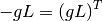
The matrix is thus antisymmetric and the general form of is then:
One can check, that is indeed antisymmetric. However, for a better
parametrization, it’s better to work with a metric , which
can be achieved by putting into , or equivalently, to work
with 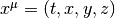 and multiply this by a matrix
to get . To get a symmetric , we just have to do
,
so to get an unsymmetric from the symmetric one, we need to do
, so we get:
We have parametrized all the proper Lorentz transformations with just 6 parameters , , , , and . The matrices and are defined as:

Straightforward calculation shows:
The first relation corresponds to the commutation relations for angular
momentum, second relation shows that  transforms as a vector under rotations
and the final relation shows that boosts do not in general commute.
transforms as a vector under rotations
and the final relation shows that boosts do not in general commute.
We get:
As a special case, the rotation around the 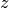-axis is given by 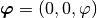 and :
The boost in the -direction is  and
, e.g.:
and
, e.g.:


from the construction, , so we may do the
substitution  , where
, where
 . The inverse transformation is:
. The inverse transformation is:
and we get the boost given above:

Adding two boosts together:


with
O(4) Group¶
The group of rotations in 4 dimensions is O(4), e.g. all matrices satisfying:
(5)
with .
Taking the determinant of (5) we get or
. Writing the 00 component of (5) we get
or
Thus we always have . That is different to the O(3, 1) group: the O(4) group consists of only 2 continuous parts, that are not connected. (The SO(4) part contains the element though, but one can get to it continuously, so the group is doubly connected.)
Everything proceeds much like for the O(3, 1) group, so is antisymmetric, but this time , so we get:
and so we also have 6 generators, but this time all of them are rotations:
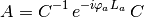
with . The spatial rotations are the same as for O(3, 1) and the remaining 3 rotations are 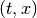, and plane rotations. So for example the rotation is:
Now we can do this identification:
so we get the Galilean transformation in the limit :
Adding two boosts together:

with
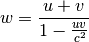
However, there is one peculiar thing here that didn’t exist in the O(3, 1)
case: by adding two velocities less than , for example , we get:
(as opposed to  in the O(3, 1) case).
So one can get over easily. By adding together:
in the O(3, 1) case).
So one can get over easily. By adding together:
(as opposed to in the
O(3, 1) case). So we can also get to negative speeds easily. One also needs to
be careful with identifying ,
because for we should probably set . All of this follows directly from the
structure of SO(4), because one can get from  to
to
 continuously (this corresponds to increasing over
). In fact, by adding two speeds , one always gets
. But if is larger than any speed that we are
concerned about, we are fine.
continuously (this corresponds to increasing over
). In fact, by adding two speeds , one always gets
. But if is larger than any speed that we are
concerned about, we are fine.
Proper Time¶
Proper time  is a time elapsed by (physical) clocks along some (4D)
trajectory. Coordinate time is just some time coordinate assigned to each
point in the space and usually one can find some real clocks, that would
measure such a time (many times they are in the infinity). To find a formula
for a proper time (in terms of the coordinate time), we introduce a local
inertial frame at each point of the trajectory – in this frame, the clocks do
not move, e.g. , , is
constant (zero) and there is no gravity (this follows from the definition of
the local inertial frame), so the metric is just a Minkowski metric.
is a time elapsed by (physical) clocks along some (4D)
trajectory. Coordinate time is just some time coordinate assigned to each
point in the space and usually one can find some real clocks, that would
measure such a time (many times they are in the infinity). To find a formula
for a proper time (in terms of the coordinate time), we introduce a local
inertial frame at each point of the trajectory – in this frame, the clocks do
not move, e.g. , , is
constant (zero) and there is no gravity (this follows from the definition of
the local inertial frame), so the metric is just a Minkowski metric.
For any metrics, is invariant:
so coming to the local inertial frame, we have , , constant and we
get:
so:
since we are still in the local inertial frame (e.g. no gravity), we have (depending on which metrics we take it could also be ), so:
This formula was derived in the local inertial frame, but the right hand side
is the same in any inertial frame, because is invariant and too.
So in any frame we have:
We’ll explain how to calculate the proper time on the 1971 Hafele and Keating experiment. They transported cesium-beam atomic clocks around the Earth on scheduled commercial flights (once flying eastward, once westward) and compared their reading on return to that of a standard clock at rest on the Earth’s surface.
We’ll calculate it with all the metrics discussed above, to see the difference.
Weak Field Metric¶
Let’s start with the metrics:
Then:
where
is the nonrelativistic velocity. Then we expand the square root into power
series and only keep terms with low powers of :
so
Now let be the speed of the plane relative to the (rotating) Earth
(positive for the eastbound flights, negative for the westbound ones),
 the surface speed of the
Earth, then the proper time for the clocks on the surface is:
the surface speed of the
Earth, then the proper time for the clocks on the surface is:

and for the clocks in the plane
then the difference between the proper times is:
but , where is the altitude of the plane, so the final formula is:
Let’s evaluate it for typical altitudes and speeds of commercial aircrafts:
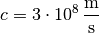
For eastbound flights we get:
and for westbound flights we get:
By neglecting gravity, one would get: eastbound flights:
and for westbound flights:
By just taking the clocks to the altitude and staying there for 46 hours (without moving with respect to the inertial frame, e.g. far galaxies), one gets:
Rotating Disk Metric¶
The rotating disk metrics is (taking weak field gravitation into account):
Then:

where
is the nonrelativistic velocity. Then we expand the square root into power
series and only keep terms with low powers of :
so
Now as before let be the speed of the plane (relative to the rotating Earth, e.g. relative to our frame), the surface speed of the Earth, so . For the clocks on the surface, we have:
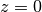
so

then the proper time for the clocks on the surface is:

and for the clocks in the plane we have:
where  is defined by , so
is defined by , so
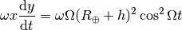
and
then the difference between the proper times is:
but , where is the altitude of the plane and we approximate
so the final formula is the same as before:
Note: for the values above, the bracket , so it’s effect on the final difference of the proper times is negligible (e.g. less than ). The difference is caused by a slightly vague definition of the speed of the plane, e.g. the ground speed is a bit different to the speed relative to the rotating Earth (this depends on how much the atmosphere rotates with the Earth).
Concluding Remarks¶
The coordinate time in both cases above is totally different. One can find
some physical clocks in both cases that measure (e.g. whose proper time is) the
particular coordinate time, but the beauty of the differential geometry
approach is that we don’t have to care about this. is just a coordinate,
that we use to calculate something physical, like a proper time along some
trajectory, which is a frame invariant quantity. In both cases above, we got a
different formulas for the proper time of the surface clocks (and the clocks in
the plane) in terms of the coordinate time (because the coordinate time is
different in both cases), however the difference of the proper times is the
same in both cases:
There is still a slight difference though – the here used to evaluate the
integral is different in both cases. To do it correctly, one should take the
total time as measured by any of the clocks and then use the right formula for
the proper time of the particular clock to convert to the particular coordinate
time. However, the difference is small, of the order of nanoseconds, so it’s
negligible compared to the total flying time of 46 hours.
FAQ¶
How does one incorporate the fact, that there are only two possible
transformations, into all of this?
For more info, see: http://arxiv.org/abs/0710.3398.
Answer: in that article there are
actually three possible transformations,  corresponds to O(4), 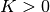 to
O(3, 1) and to either of them in the limit .
corresponds to O(4), 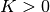 to
O(3, 1) and to either of them in the limit .
What is the real difference between the Newtonian physics and special relativity? E.g. how do we derive the Minkowski metrics, how do we know we need to set and how do we incorporate gravity in it? Answer: there are only three possible groups of transformations: O(4), O(3, 1) and a limit of either for . All three provide inequivalent predictions for high speeds, so we just choose the right one by experiment. It happens to be the O(3, 1). As to gravity, that can be incorporated in either of them.
Questions Without Answers (Yet)¶
How can one reformulate the article http://arxiv.org/abs/0710.3398 into the language of the O(4) and O(3, 1) groups above? Basically each assumption and equation must have some counterpart in what we have said above. I’d like to identify those explicitely.
What are all the possible metrics, that generate the Newtonian Christoffel symbols? (Several such are given above, but I want to know all of them) Probable answer: all metrics, whose inverse reduces to in the limit . I would like to have an explicit proof of this though.
What is the role of the different metrics, that generate the same Christoffel symbols in the limit ()? Can one inertial frame be given with one and another frame with a different form of the metrics (e.g. one with and the other one with ?) Possible answer: there is no transformation to convert a metrics with signature +4 to signature +2, so one has to choose one and then all other inertial frames have the same one.
What are all the allowed transformations between inertial frames? If we assume that the inertial frames are given with one given metrics (see the previous question), then the answer is: representation of the O(3, 1) group if or O(4) group if . But if one frame is and we transform to another frame with , then it is not clear what happens. Possible answer: one has to choose some signature and stick to it, see also the previous question.
What is the real difference between Newtonian physics and general relativity? Given our formulation of Newtonian physics using the differential geometry, I want to know what the physical differences are between all the three theories are.